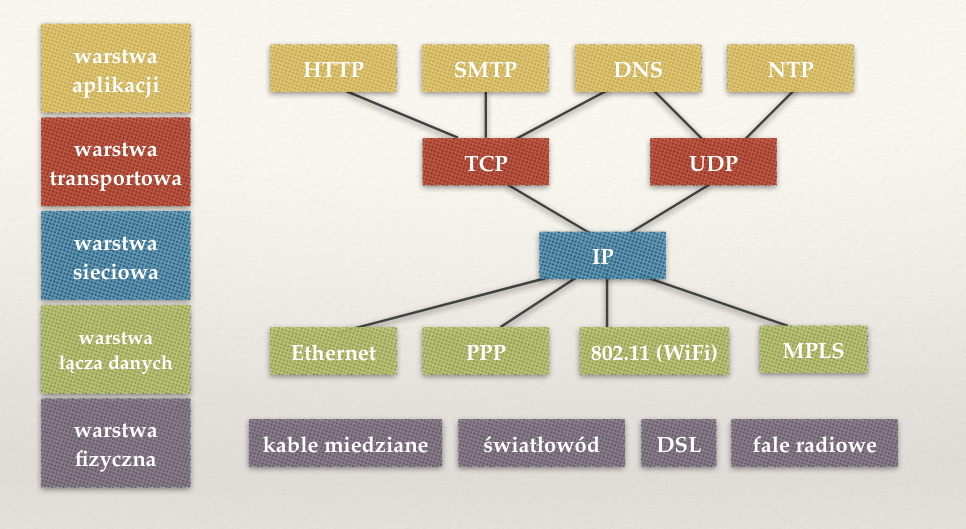
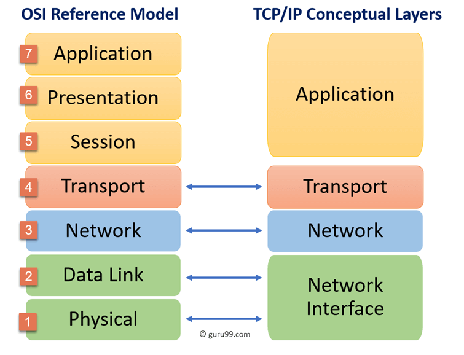
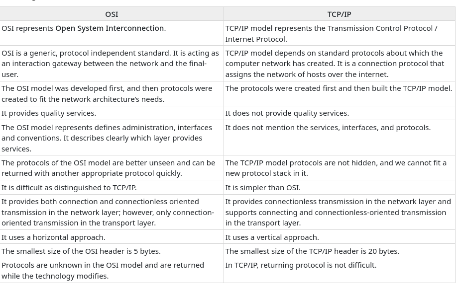
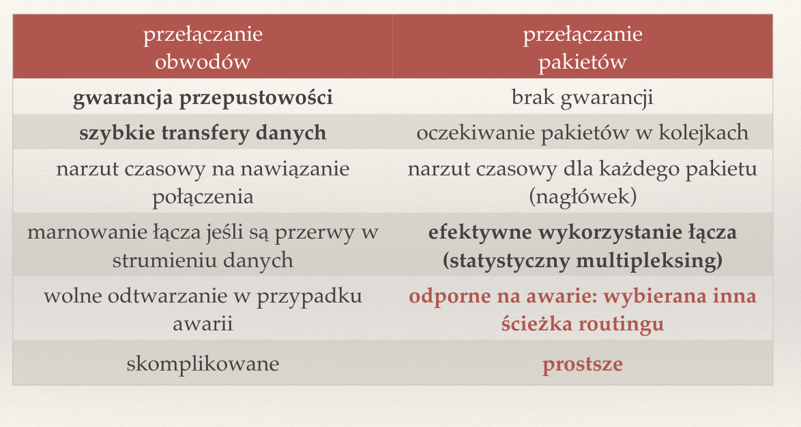
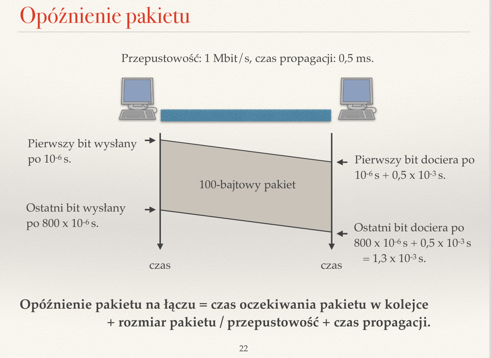

Zagadnienia
❖ Co to jest protokół komunikacyjny? Dlaczego wprowadza się warsty protokołów?
Zbiór reguł, określających w jaki sposób zachodzi komunikacja między urządzeniami — jej zasady, składnię, sposób synchronizaacji, wykrywania i korekcji błędów, itp.
❖ Wymień warstwy internetowego modelu warstwowego. Jakie są zadania każdej z nich?
Komunikacja w Internecie dzieli się na kilka warstw, które wydzielają niezależne od siebie warstwy abstrakcji. Różne warstwy abstrakcji nie widzą się nawzajem, co zapewnia klarowność i upraszcza wymianę danych. Można wyróżnić:
- Warstwa aplikacji — najwyższa warstwa abstrakcji, w której dwie aplikacje komputerowe komunikują się ze sobą, np. za pomocą adresów internetowych, nie zwracając uwagi na takie szczegóły, jak adres IP komputera, z którym się łączą. Przykładem protokołu z tej warstwy jest HTTP, który umożliwia transfer informacji, np. między witrynami internetowymi.
- Warstwa transportowa — leży poniżej warstwy aplikacji. Jej protokoły mają świadomość portów, z których korzystają dane aplikacje, więc wiedzą pod który z nich powinny wysyłać dane. Istnienie portów umożliwa komputerom rozróżnienie, do którego z uruchomionych procesów powinny przesłać otrzymane z sieci dane (każdy proces, np. przeglądarka internetowa, ma przypisany własny numer portu, a protokoły mają na stałe przypisany dany port, np. HTTP to 80, a SSH 22).
- Warstwa sieciowa — leży jeszcze niżej i obsługuje tylko jeden protokół — IP. Umożliwia rozróżnianie komputerów oraz sieci i wie, do którego urządzenia powinna przesłać dane, korzystając z adresów IP. Są to jednak adresy logiczne, pozwalające na komunikację globalną — warstwa sieciowa nie ma wglądu w faktyczną implementację kanału, jakim zachodzi komunikacja, tj. nie wie czy komputer łączy się ze światem za pomocą WIFI, czy przez Ethernet, nie interesuje jej też, przez jakie inne maszyny po drodze muszą przejść dane, by dotrzeć do celu.
- Wartstwa łącza danych — podobnie jak IP umożliwia komunikację między komputerami, ale na poziomie lokalnym, tj. między dwiema maszynami, które są ze sobą połączone bezpośrednio. Posiada informację na temat tego, jakim kanałem odbywa się komunikacja, tj. rozumie w jaki sposób przesyłać dane przez Ethernet, a w jaki przez WIFI.
- Fizyczna — opisuje fizyczny sposób, w jaki odbywa się komunikacja, tj. przez kabel miedziany, światłowód czy przez fale radiowe.

Ze względu na to, że warstwa sieciowa obsługuje wyłącznie jeden protokół — IP, możliwa jest komunikacja dowolnych sieci (jej szczegóły są stalane przez pozostałe wastwy), a ponadto wszelkie modyfikacje protokołów komunikacji są implementowane na pozostałych warstwach — tych, których dotyczą. Jest to modularność, która pozwala na niezależny rozwój protokołów i komunikacji internetowej bez ingerencji w pozostałe warstwy.
❖ Jakie warstwy są zaimplementowane na komputerach a jakie na routerach?
Zastanówmy się, co jest w zasadzie potrzebne komputerowy do komunikacji? Na pewno chcielibyśmy korzystać, np. z przeglądarki internetowej, a do tego konieczna jest warstwa aplikacji. Podobnie do tego będzie nam potrzebna warstwa transportowa, ponieważ nie będzie to z pewnością jedyna aplikacja, którą będziemy się łączyć z internetem. By wysyłać pakiety pod odpowiednie adresy konieczne będzie użycie warstwy sieciowej oraz łącza danych, a także warstwy fizycznej, którą będzie implementować karta sieciowa, np. WIFI. W komputerze zaimplementowane są w takim razie wszystkie warstwy.
Kwestia routera jest bardziej skomplikowana. Teoretycznie ma on jedynie trasować ruch sieciowy, przekierowywać pakiety, do czego potrzebuje jedynie warstw od fizycznej do sieciowej, ale wyczytałem, że w praktyce implementuje wszystkie warstwy (https://www.quora.com/Which-layers-are-present-in-a-router?share=1). Jednak sądzę, że oczekiwaną odpowiedzią jest sieciowa, łącza danych i fizyczna.
❖ Czym różni się model warstwowy TCP/IP od OSI?
Oba modele dzielą komunikację sieciową na warstwy, którym przypisują określone funkcje, jednak różnią się poziomem szczegółowości. Model OSI wprowadza dodatkowe podwarstwy w warstwie aplikacji (aplikacji, prezentacji oraz sesji), a także w warstwie łącza danych (łącza danych i fizyczna). Model OSI wprowadza silne rozgraniczenie między interfejsami, usługami i protokołami, gdzie w TCP/IP te granice są bardziej rozmyte.


❖ Co jest potrzebne do zbudowania dwukierunkowego niezawodnego kanału?
- adresowanie
- metoda przesyłu danych
- metoda zapewniania niezawodności przesyłu danych
- Fizyczny podział łącza na dwa kanały, np. dwa kable — jeden do wysyłania, a drugi do odbierania.
- Podział kanału na sygnały, które mogą poruszać się w oba kierunki, np. podział danych na pakiety.
❖ Porównaj wady i zalety przełączania obwodów i przełączania pakietów.
Przełączanie obwodów polega na fizycznym lub wirtualnym zarezerwowaniu łącza dla danego użytkownika, co łączy się ze stałą prędkością komunikacji i gwarancję przepustowości, jednak pociaga za sobą znaczną wadę — łącze jest marnowane, gdy klient, który zarezerwował łącze, akurat nic nie wysyła. W praktyce jest to także rozwiazanie bardziej skomplikowane konstrukcyjnie.
Rozwiązaniem tego problemu jest zastosowanie przełączania pakietów, w którym każdy klient wysyła pojedyncze pakiety, na które podzielił wysyłane przez siebie dane. Pakiety zawierają informację o tym, do kogo należy je dostarczyć, więc jednocześnie może nadawać wiele maszyn. To rozwiązanie zapewnia znaczny wzrost elastyczności komunikacji, a także zapewnia efektywne wykorzystanie łącza. Jednocześnie pakiety są kolejkowane i nie ma żadnej gwarancji przepustowości — dany klient może bardzo długo oczekiwać, aż jego pakiety zostana przesłane do odbiorcy. Sama konstrukcja pakietów wiąże się także z narzutem czasowym — trzeba taki pakiet skonstruować, obudowując dane nagłówkami. Z drugiej strony konstrukcyjnie jest to rozwiązanie bardzo proste, a także odporne na awarie (przesyłanie opiera się na tablicach routingu, więc w wypadku awarii wystarczy zmienić ścieżkę na inną).

❖ Jakie znasz rodzaje multipleksowania? Po co i kiedy się je stosuje?
Mamy dwa podstawowe rodzaje multipleksowania:
- z podziałęm czasu — każdy klient ma przydzielony pewien czas, w którym może nadawać. Jest to rozwiązanie stosowane w starszych protokołach telekomunikacyjnych, np. 2G, gdzie do danej anteny łączyło się kilka telefonów i każdemu przydzielano ułamek czasu.
- z podziałem częstotliwości — każdy z klientów otrzymuje własne pasmo częstotliwości, w którym może nadawać. Jest to rozwiązanie spotykane w radiu oraz telewizji, gdzie każda stacja lub kanał telewizyjny posiada własną częstotlwiość.

❖ Porównaj ze sobą rodzaje routingu.
Routing (inaczej trasowanie) to sposób doboru trasy dla danego pakietu. Wyróżnia się kilka rodzajów routingu:
- routing źródłowy — nagłówek pakietu zawiera pełną trasę do celu. Jak łatwo się domyślić, nie jest to optymalne rozwiązanie dla długich tras.
- routing z tablicą routingu — router, czyli maszyna przekierowująca pakiety zgodnie ze zdefiniowaną w sobie tablicą routingu, przekierowuje pakiety do kolejnych maszyn/routerów. Tablica routingu, to zbiór reguł, które pozwalają dopasowywać adres docelowy do pewnego wzorca, któremu jest przepisany router, do którego należy przekierować dany pakiet.
- routing z wirtualnym przełączaniem obwodów — nadawca rozpoczyna komunikację od przesłania pakietów kontrolnych, czym ustanawia ścieżkę do celu i konfiguruje routery na trasie. Czasami rezerwuje sobie w ten sposób dany fragment łącza. Następnie rozpoczyna przesył pakietów przez ustaloną wcześniej trasę.
❖ Co to jest komunikacja pełnodupleksowa, półdupleksowa i simpleksowa?
- full-duplex — dane mogą być przesyłane w obie strony jednocześnie.
- half-duplex — dane mogą być wysyłane w obie strony, ale nie jednocześnie (tylko naprzemiennie).
- simplex — dane mogą być wysyłane tylko w jedną stronę.
❖ Do czego służy polecenie traceroute? Co pokazuje?
Słuzy do wyszukania trasy, jaką przebywają pakiety IP. Wylistowuje routery i maszyny, jakie mija po drodze pakiet.
❖ Po co stosuje się bufory w routerach? Co to jest przeciążenie?
Routery to maszyny, które na wejściu odbierają pakiety, a na wyjściu wysyłają w dalszą podróż. Są jednak w stanie pracować tylko z daną prędkością. Gdy prędkość, z jaką pakiety są wysyłane na wejście routera jest większa od prędkości, z jaką router jest w stanie je przesłać dalej, wtedy pakiety mogą nie zostać odebrane przez router i zgubione. Dlatego w routerach stosuje się bufory, które przechowują pakiety, które oczekują na wysłanie. Przeciążenie to zjawisko przepełnienia takiego bufora — pakiety są wtedy tracone.
❖ Jakie są przyczyny opóźnień pakietów?
Opóźnienia pakietów wynikają z trzech przyczyn:
- zanim pakiet zostanie wysłany, musi opuścić kolejkę, w której oczekiwał
- pakiet składa się z wielu bajtów, ale łącze posiada maksymalną liczbę bajtów, jakie jest w stanie przesłać w jednostce czasu
- sam przesył danych wiąże się z czasem propagacji, czyli czasem, w jakim sygnał przebywa drogę między dwiema maszynami.

❖ Co to jest BDP? Co to jest czas propagacji?
Czas propagacji to czas, jaki jest potrzebny sygnałowi, by przebyć drogę między dwoma końcami kanału, np. prędkość sygnału elektrycznego w kablu koncentrycznym, albo fali elektromagnetycznej w powietrzu.
BDP (bandwidth-delay product) to iloczyn przepustowości i RTT (Round Trip Time, czyli czas propagacji do odbiorcy i z powrotem do nadawcy), który mówi o tym, ile danych uda nam się przesłać, zanim dostaniemy odpowiedź od odbiorcy na pierwszy wysłany pakiet.
❖ Wyjaśnij pojęcia: komunikacja simpleksowa, półdupleksowa, pełnodupleksowa.
Chwila, czy tego już nie było? ❖ Co to jest komunikacja pełnodupleksowa, półdupleksowa i simpleksowa?
❖ Co umożliwia protokół IP? Co to znaczy, że protokół realizuje zasadę best effort?
IP (Internet Protocol) umożliwia zawodną i bezpołączeniową komunikację między dwoma urządzeniami w sieci.
Zasada best effort oznacza brak gwarancji na to, że pakiet zostanie dostarczony (mogą się gubić i docierać w złej kolejności), ale nie są gubione celowo.
❖ Jakie są zalety i wady zasady end-to-end?
End-to-end to zasada, mówiąca że wszelkie modyfikacje działania sieci powinny zachodzić nie w jej centrum, ale w urządzeniach końcowych, np. na poszczególnych maszynach. Dotyczy to np. implementacji niezawodności przesyłu danych.
https://cio-wiki.org/wiki/End-to-End_Principle#Pros_and_Cons_of_End-to-End-Principle.5B4.5D
Zalety:
- elastyczność — zmiany są wprowadzane tam, gdzie są potrzebne, bez konieczności przebudowywania jądra sieci, co jest potencjalnie bardzo kosztowne
- prostota implementacji — ponownie, wynika z braku konieczności przebudowy całej struktury sieci
- niższa awaryjność — w przypadku awarii spowodowanej przez daną modyfikację, problemy dotyczą tylko niewielkiego zbioru maszyn, a nie całej sieci
Wady:
- niższa efektywność — nakłady czasowe na każdym z punktów końcowych
- problemy z wprowadzaniem zmian globalnych — nie wystarczy zmodyfikować tylko jądra sieci, ale trzeba to zrobić dla każdego z punktów końcowych
❖ Po co wprowadza się porty?
Na komputerach jednocześnie wiele procesów może łaczyć się z siecią i prowadzić przez nią wymianę danych. Pakiety internetowe z informację od adresie IP, pod jaki mają zostać dostarczone, jednak gdy jądro systemu je odbierze, potrzebuje dodatkowej informacji, by ustalić do jakiego procesu należy je przesłać. W tym celu stosuje się porty, które są przypisywane w unikatowy sposób procesom.
❖ Wyjaśnij pojęcie enkapsulacji i dekapsulacji.
Enkapsulacja — obudowywanie danych dodatkowymi danymi, np. dodawanie nagłówka do pakietów internetowych, by zapewnić danemu interfejsowi tylko te dane, które są mu potrzebne — utworzyć warstwę abstrakcji.
Dekapsulacja — proces odwrotny do enkapsulacji, tj. wyłuskiwanie danych spod warstwy abstrakcji.
{kind=link}
{kind=link}
{kind=link}
{kind=link}
{kind=link}